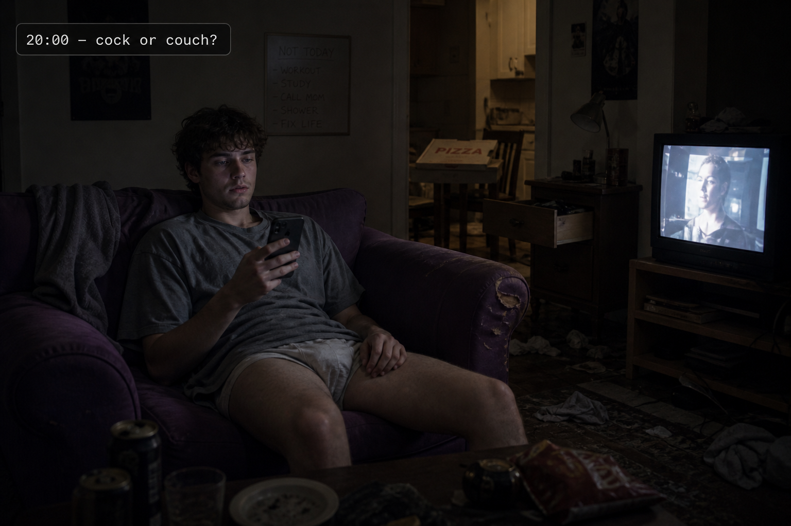

20:00

Image MissingCharlie was horny but they were frozen and confused. A horny nonbinary 27-year-old realizing it has been a few weeks since they had dick.
They have been taking their PrEP daily—a ritual of readiness—but haven't even kissed a guy in weeks. They were starting to panic about going out.
They went to a queer meetup and met some fun people, but the "social battery" was currently flashing red. They were debating if a night stoned on the sofa eating pizza was a better substitute for sex and less effort.
Internal Metrics
Incoming Distractions:
📱 Stephen's Voice Note
🔮 THE LOCAL ORACLE
No API key required. Logic based on your current metrics.